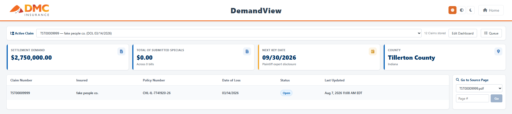
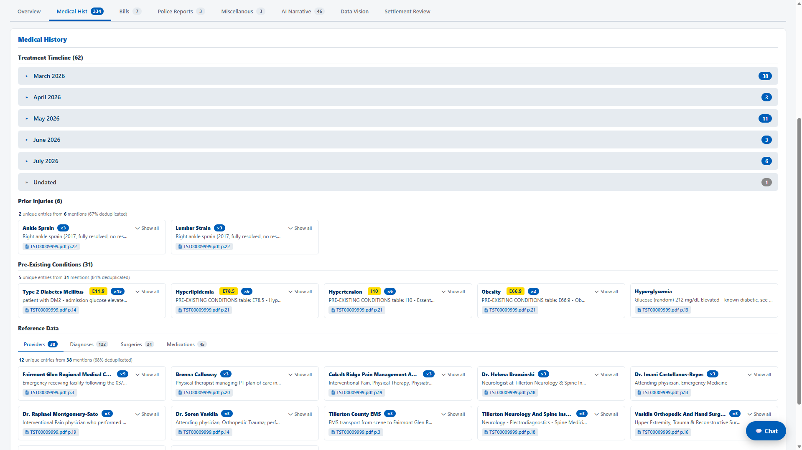
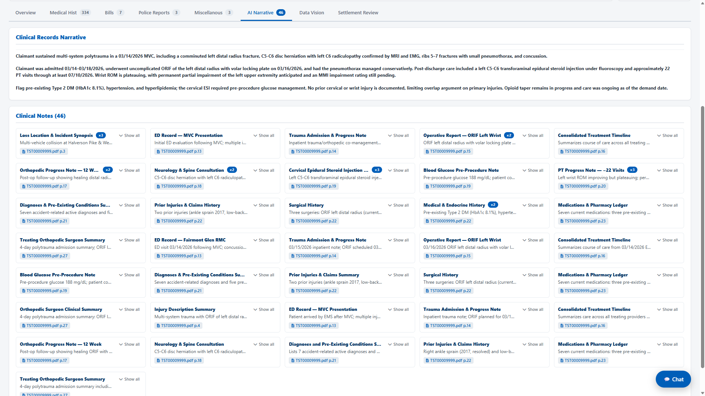
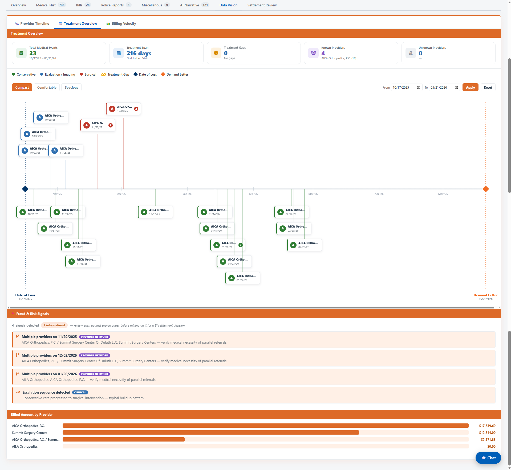

Henry Russom
I build AI systems that people actually use.
CS (AI specialization) + Informatics, Indiana University ’28· AI intern @ DMC Insurance· Former founding engineer @ Host with Rally
Built DemandView, an AI pipeline that turns 500-page scanned demand packages into fully organized claims. In production with the bodily-injury claims team since July 2026. Returning remotely this fall to take DemandView and two more internal tools to production.
Was one of two founding engineers at an AI event-booking startup: built the TypeScript and Supabase backend turning natural-language event requests into scored vendor matches and bookable packages.
DemandView: AI triage for bodily-injury demand packages
The user
Bodily-injury claims adjusters, many of whom have been working claims for decades. When a demand package arrives, roughly 500 pages of scanned, often blurry medical bills, medical records, and police reports, the adjuster reads it manually and takes notes on paper. One demand costs 4+ hours of reading before any actual judgment begins.
Finding the problem
I spent my first week shaking hands in the claims department: an hour each with adjusters and reps, mapping what they actually do all day. I listened for the things people joked or complained about, and for redundancies that veterans no longer notice. Watching one adjuster scroll a 500-page packet taking paper notes, I asked how long that takes. "Four or five hours. It always does."
One conversation was not enough. Different adjusters described the work differently, so I kept cross-checking until I had a universal view, then took it to the president of claims, whose goal is simple: maintain or increase output. He had a real concern about AI: he did not want adjusters to stop knowing their claims deeply. That constraint shaped the whole product. The demand arrives late in a claim's life, when the adjuster already knows the claim well. Organizing the demand is grunt work, not judgment.
So the design principle became: AI organizes, adjusters decide.
Scoping
My first idea was a full claims dashboard for every adjuster and rep. My manager pushed back hard: that changes a working process far too much at once. I narrowed the scope repeatedly until I could write out the complete goal tangibly: analyze one demand package, end to end. I spent two weeks aligning on scope before writing code, shipped a proof of concept, and ran recurring demos with adjusters whose feedback drove the feature set from there.
What I built
A custom AI triage engine, built in-house on Azure rather than adapting our parent company's software: each demand is split into per-page images and sent to the Claude API in three-page batches, with a JSON handoff carrying state between calls — what is done, what is in progress, what must not be double-counted. The pipeline runs on Azure infrastructure end to end, with documents staged in Azure Data Lake and results landing in SQL Server, surfaced on a web frontend with tabs for medical bills, medical records, general overview, police report, settlement review, insurance, and data visualization, including a treatment-timeline view. A built-in chatbot queries the same database for quick questions. A full demand processes hands-off in roughly two hours, against 4+ hours of manual reading.





How it evolved
The shipped product is considerably bigger than the one I scoped. Demoing early and often meant a steady stream of adjuster requests, and because the users driving them had decades of claims experience, most requests were good ones. I said yes to nearly all of them: roughly thirty features, each about a day of work, none in the original plan. The upside was real, twice over: the product got sharper with every cycle, and the adjusters who saw their suggestions shipped became its advocates before it ever launched. The cost was also real: the scope grew several times over, and the project ran well past its original timeline.
Status
In production with the bodily-injury claims team since July 2026, with adjuster onboarding sessions underway. A full 500-page demand comes back the same morning it is submitted, as thousands of structured, filterable entries instead of a stack of paper notes. I accepted a return offer for the fall: DemandView and two more internal tools go to production, and I continue forward development remotely through the semester, working with the adjusters over Zoom.
What I would do differently
Separate listening from committing. My openness to feedback built the product's best features and its earliest champions, but treating every good suggestion as a v1 commitment is what stretched the timeline. Next time the discipline is a versioned roadmap: every request gets heard and logged, the best ones earn a place in the current version, and the rest wait for v2 without guilt. "Great idea, it's in the next release" keeps both the trust and the ship date.
I'm a junior at Indiana University doing a dual degree in computer science (AI specialization) and informatics, with minors in business and Spanish. Before software I spent five summers on residential construction sites, where I also worked as the English–Spanish interpreter between site managers and crews — which turns out to be decent training for translating between claims adjusters and AI pipelines.
What I like building sits at the same intersection every time: AI applied to messy, high-stakes, real-world work — insurance claims, event logistics — where the hard part isn't the model, it's earning the trust of the people who have to use it.